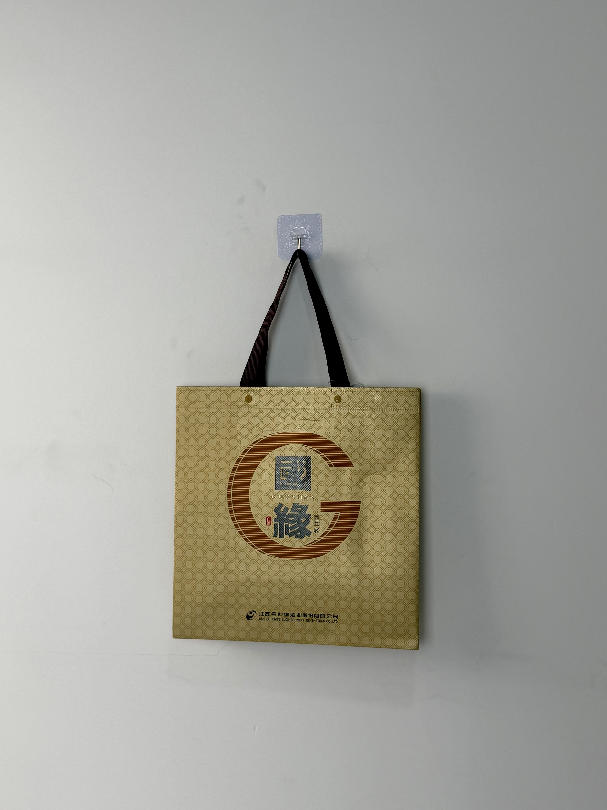

An opulent champagne-gold gift bag for Guoyuan Baijiu, featuring traditional geometric patterns and a commanding monogram that elevates Chinese liquor gifting into a statement of cultural prestige.

Guoyuan is the flagship brand of Jiangsu Jinshi Yuan Brewery Joint-Stock Co., one of China's most respected Baijiu producers with a heritage spanning multiple generations. In Chinese business culture, Baijiu is not merely an alcoholic beverage — it is a social lubricant, a relationship builder, and a status signal. The packaging that carries a bottle of premium Baijiu into a business dinner or family celebration carries equal weight to the liquid inside. Guoyuan's gift bags must communicate prosperity, tradition, and prestige.
When our customers give Guoyuan as a gift, the bag is the first thing the recipient sees. It needs to communicate respect before the bottle is even opened.
The gift bag project emerged from Guoyuan's expansion into premium-tier Baijiu markets, where competitors were investing heavily in packaging that signaled luxury positioning. The brand needed a bag that could hold its own against international spirits brands while remaining unmistakably Chinese in its visual language.
The design draws from classical Chinese decorative arts: the repeating geometric lattice pattern references traditional brocade textiles and architectural screenwork, while the commanding circular monogram echoes imperial seals and commemorative medallions. The champagne-gold field positions the bag within the premium spirits gifting tradition shared by Cognac and Scotch whisky.
Classical geometric motif references traditional Chinese brocade and architectural screen design.
Oversized circular seal with calligraphic characters creates authoritative brand presence.
Hot-foil stamping in copper-gold communicates premium positioning through metallic luminosity.
Metal rivets and wide webbing handles engineered for 2-bottle Baijiu gift set weight.
Baijiu gift bags operate in a unique performance envelope: they must feel substantial and luxurious while withstanding the significant weight of glass bottles filled with high-proof liquor. The construction prioritizes load capacity and structural elegance over cost minimization.
| Parameter | Specification | Test Standard |
|---|---|---|
| Load Capacity | 6 kg | ASTM D5265 |
| Foil Adhesion | > 300 cycles | ASTM D5264 |
| Rivet Pull Strength | > 80 N | Internal Protocol |
| Color Fastness | Grade 4-5 | ISO 105-B02 |
Premium Baijiu gift packaging requires multi-stage finishing that combines gravure printing precision with hot-foil luxury effects. The six-stage workflow integrates decorative and structural processes.
120gsm non-woven PP extruded with champagne-gold masterbatch. Color matched under D65 to ensure consistency across batches.
Lattice pattern printed via rotogravure at 175 LPI. Registration precision within ±0.3mm for seamless geometric repeat.
Copper-gold foil transferred at 150°C for monogram and brand details. Precision die alignment to printed background.
20-micron gloss BOPP film applied for surface protection and metallic enhancement. Calendered for mirror finish.
Ultrasonic die-cutting with 12cm box gusset folding. Heat-sealed base corners for bottle-weight stability.
Brown woven handles attached with brass rivets. Load-tested at 150% rated capacity. AQL 1.0 final inspection.
The gift bag was deployed across Guoyuan's premium product lines during the Mid-Autumn Festival and Spring Festival gifting seasons — the two peak periods for Baijiu gift purchases in China. Distribution focused on department-store liquor counters, premium supermarkets, and direct corporate gifting programs.
Key Insight: Corporate purchasers specifically requested the gift bag version over plain bottle packaging, noting that the bag's presentation quality reflected well on their own company when giving Baijiu to clients and partners. The bag became a competitive differentiator in B2B gifting procurement.
The heritage lattice pattern proved particularly effective with older consumers who recognized the traditional design reference. Younger buyers, meanwhile, appreciated the gold-and-champagne color scheme for its Instagram-worthy aesthetics — demonstrating cross-generational appeal that expanded Guoyuan's consumer base beyond its traditional demographic.
Three design decisions differentiate this Baijiu gift bag from standard liquor packaging. Each addresses specific cultural and functional requirements of the Chinese premium spirits market.
The oversized circular monogram functions as a modern imperial seal — communicating authority and authenticity. In a market plagued by counterfeit Baijiu, this commanding brand mark reassures recipients of product genuineness while conveying respect through its ceremonial visual weight.
While many Baijiu brands use aggressive red and gold combinations, the champagne-gold field positions Guoyuan within the same visual territory as Cognac and premium Scotch. This color choice signals that the brand belongs in global spirits conversations, not merely domestic Baijiu comparisons.
Glass Baijiu bottles are heavy and fragile. The visible metal rivets serve a dual purpose: they reinforce handle attachment for 6kg loads, and they signal structural confidence to users. A gift bag that fails while carrying bottles to a business dinner creates catastrophic social embarrassment — the rivets visually prevent that anxiety.
We manufacture luxury gift packaging for Baijiu, wine, and spirits brands. From traditional cultural motifs to international premium aesthetics, we deliver bags worthy of your finest bottles.